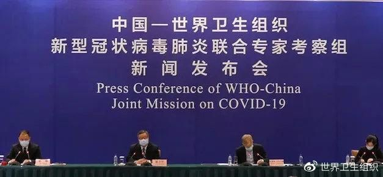
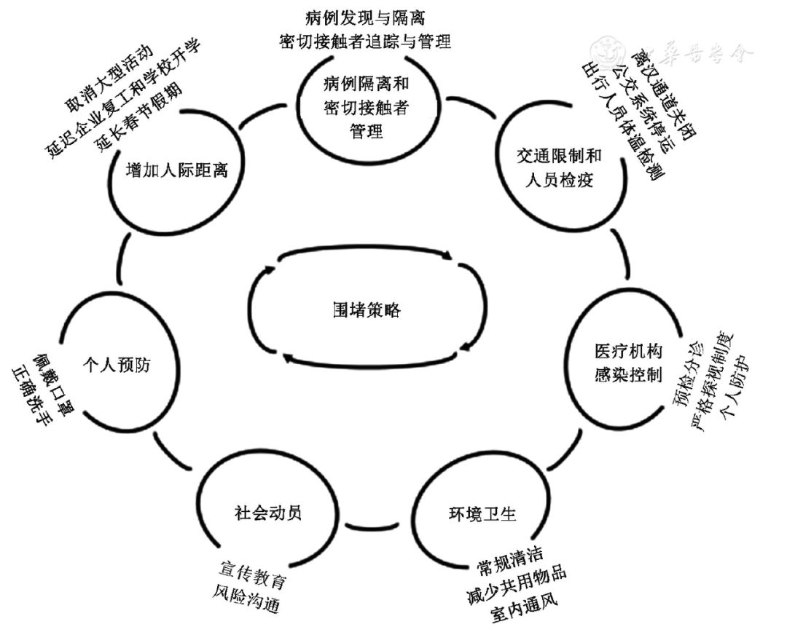
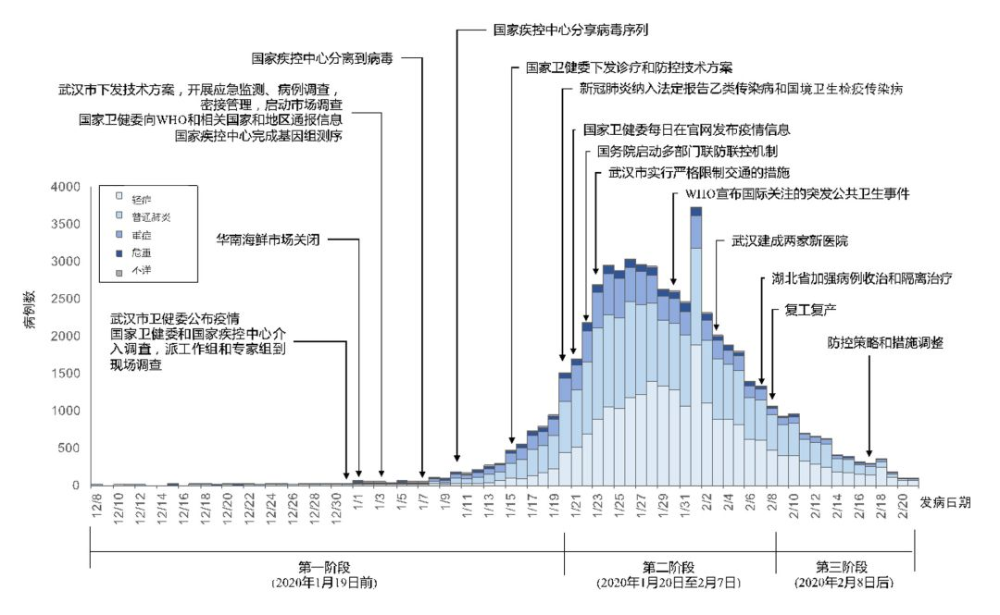

“封城”一月：武汉生活图鉴
原文链接 备份链接 经历整整31天的艰难考验之后，武汉疫情防控已经从无序走向有序，但千万居民的生活从无序到有序才刚刚开始，这个疫情核心区的社会经济生活全面恢复，还面临很多挑战 2020年2月11日，武汉市洪山体育馆武昌方舱医院，社区工作人 …
武汉 “封城” 功过几何，国内外评价不一。
以《纽约时报》为代表的国外媒体对其颇多负面评价。这些观点认为，尽管这些措施能起到一定程度上限制病毒传播速度的作用，但造成的巨大社会和经济成本是巨大的，尤其是会造成民众恐慌和医疗资源挤兑。《自然》杂志也引述昆士兰大学病毒学家批评称，“封城”相当于把武汉变成一个巨大的细胞培养皿，所有人互相传染，将制造出更多病例。
世界卫生组织（WHO）内部也有不同声音。其驻中国代表高力 (Gauden Galea) 表示，试图封闭一个 1100 万人口的城市是科学上的新课题。这样的公共卫生措施前所未有，会不会奏效还很难说。

图 | 北京时间 2 月 24 日晚 7 点 30 分，中国 - 世界卫生组织新冠肺炎联合专家考察组在北京召开了新闻发布会。
2 月 17 日，中国疾控系统研究人员在《中华预防医学杂志》发表《我国新型冠状病毒肺炎疫情早期围堵策略概述》对中国的围堵策略做了阐述和评价。
该文认为，整体来看，围堵策略措施的实施降低了除武汉外中国其他地区出现社区持续传播的风险，延缓了流行高峰到来时间，缓解了医疗资源的压力，为应对可能出现的严重流行准备争取了宝贵时间，但也对武汉等疫情较重地区的人民生活和社会生产造成了一定的影响，经济和社会成本巨大。
此文通讯作者系中国疾病预防控制中心传染病管理处研究员冯录召。作者署名多达 20 人，除了 1 人来自南宁市疾病预防控制中心外，其他作者均来自中国疾控中心。
WHO 背书的围堵策略

隔离检疫法起源于意大利，1370 年在威尼斯首次制定以用来阻止黑死病。冯录召等人的论文指出，围堵策略（containment）于 2005 年由 WHO 提出，作为流感大流行防控的指导性策略。这种策略主要是在新发传染病疫情早期，在限定的地理范围内，采用医学和非医学（区域封锁、停学和停工等）干预策略和措施，以迅速阻断疫情传播。
1 月 23 日，武汉市宣布全市离汉通道暂时关闭。此时为病毒传播初期，其他地区的输入病例尚未引起广泛社区传播，专家判断仍有将疫情围堵在湖北等局限范围的可能性。当时正值中国春节人员出行高峰，对武汉等存在社区传播的地区实施围堵策略，以期将疫情围堵在武汉等有限地区。

图 | 中国新型冠状病毒肺炎疫情早期围堵策略及核心措施。（来源：中华预防医学杂志）
该策略的核心措施包括封锁疫区，加强病例隔离和密切接触者管理、减少人员流动（交通管控和限制出行等），增加人际距离（停止大型活动、学校延迟开学、工厂推迟复工）和促进公众个人预防等。
这些措施在全国均适用，只是对于病例的发现与隔离的措施，武汉市做到了极致。自 2 月 5 日起武汉市开始征用公共场所改建成方舱医院，力求在短时间内集中隔离收治大量的轻症患者，并且以社区网格为基础单元，采取上门排查与自查自报相结合的方式，实施全民拉网式排查，达到”应查尽查，应收尽收，应治尽治”的目标。
对于密切接触者追踪与管理是全国性的。随着累计确诊、死亡报告病例数的增加，全国社区层面开始实行网格化、地毯式管理，重点追踪、督促来自疫情发生地区武汉市的人员，居家医学观察 14 天，发现异常情况及时报告并采取相应防控措施，防止疫情输入。随着聚集性疫情的增加，自 2 月 2 日起，部分省市如天津、山东、甘肃、江苏南京市、云南规定所有密切接触者必须到指定留观场所集中医学观察，不再采取居家隔离方式，防止疫情扩散。
增加人际距离的主要措施是减少公众聚集活动，企业延迟复工和学校推迟开学，延长春节假期以及城乡社区管理。
对于城乡社区管理日趋严格。1 月 26 日，要求各地对社区和村进行严格管理，封村封路，在居民小区、村的出入口设立劝阻点，除就医和必要工作生活需要外，原则上不得外出；2 月 2 日起，除武汉外全国绝大多数居民小区陆续实行封闭式管理，根据小区规模保留 1~2 个出入口，其他通道全部关闭；小区居民凭临时出入证进出，非该小区的外来车辆、人员一律不准进入；部分小区要求每户家庭间隔一定时间指派 1 名家庭成员，在做好防护措施的基础上出门采购生活物资。
围堵效果几何

图 | 中国的新冠肺炎流行曲线。（来源：世界卫生组织）
冯录召等人承认，尽管世界卫生组织在大流感防控中曾提出类似的策略，但在许多国家是难以实施的。他们认为，在应对新发传染病时，中国有政府指导下的多部门统筹协调、群众积极响应，以及 2003 年非典和 2009 年甲型流感大流行应对经验，因此具备实施围堵策略的优势。
已经有研究提示，武汉在疫情早期采取的病例隔离、出行限制、增加人际距离和个人防护措施可以有效减少感染和死亡例数，若未采取围堵策略的任何核心措施，最终的感染者例数相比于武汉市目前（截至 2 月 4 日）感染人数将存在数量级差异。
有研究称，全国不同地区的出行限制可使新冠肺炎病毒从武汉市传播到国内其他城市的速度延迟 2.9 天。还有研究称，现阶段北京采取 7 天的出行限制措施（无暴露人员进入）可使感染人数减少 91%。
冯录召等人认为，整体来看，围堵策略措施的实施降低了除武汉外国内其他地区出现社区持续传播的风险，延缓了流行高峰到来时间，缓解了医疗资源的压力，为应对可能出现的严重流行争取了宝贵时间。
不过论文中也承认，“封城”对武汉民众的生活和社会生产造成了一定的影响，经济和社会成本巨大。大量病例由于隔离治疗、密切接触者集中隔离观察，对其家庭造成一定损失和影响，建议各地政府考虑给予一定社会支持，提供必要的服务和救助，保障老、孤、病、残、孕、无固定收入等脆弱人群的基本生活不受严重影响。
论文提醒说，还要特别注意养老院、福利院、寓所等服务机构的疫情防控工作，保障医疗物资的供应，加强防护措施，预防在此类机构中发生暴发疫情。
武汉市相关部门对此疏忽了。据财新网报道，武汉市社会福利院距离华南海鲜市场仅数百米，2019 年 12 月至 2020 年 2 月密集死亡 19 人，除一人确诊新冠后死亡外，死因为肺部感染的老人有 6 名，均未排查新冠，另有多人死因登记为感染性休克、急性心肌梗死、猝死、心律失常，但其中出现发烧症状的不在少数。
论文指出，考虑根据策略措施实施的成本效果，可尽快调整和优化现有防控措施，精准施策，制定不同区域、不同流行水平和特点的分类指导防控策略。
WHO 怎么说
在 2 月 24 日新闻发布会上，中国 - 世界卫生组织新冠肺炎联合专家考察组外方组长、世界卫生组织总干事高级顾问布鲁斯 · 艾尔沃德（Bruce Aylward）表示，武汉方式、湖北方式是中国方式中的一种特殊方式，适用于出现社区传播的地区。
据《科学》报道，在考察组未公开发布的访问报告中得出结论，认为中国的疫情在 1 月 23 日至 2 月 2 日达到顶峰，中国在湖北省的积极封锁控制工作中，至少有 5000 万人处于 “居家封锁” 状态，为中国其他省份抵抗疫情的工作争取了宝贵时间，并最终预防了（其他省份）成千上万的病例。报告还提出，其他国家必须借鉴这一封锁工作的经验。不一定要全面封锁，但也应该采取同样严格的举措。
《科学》报道引述乔治城大学法律中心全球卫生政策专家劳伦斯 · 戈斯延（Lawrence Gostin）看法称，中国国内的限制措施让很多个人付出了巨大代价，这些政策是“令人震惊的、前所未有的、原始的”，并表示他特别关注湖北省内那些封闭在家中、受到严密监督、面临医疗服务短缺的人们的身心健康。
联合专家考察组中方组长、国家卫健委新冠肺炎疫情应对处置工作专家组组长梁万年表示，新冠病毒是很狡猾的，我们无法使用现有知识来应对，需要边阻止疫情、边总结经验、边改变措施和策略。他承认，“我们早期对疾病的认识不够到位，这也是我们的局限。”
对于武汉的下一步，梁万年建议对武汉还是要全力强化防控措施，既要强化防止输出，还要对患者、患者的密切接触者、疑似患者尽快诊断出来，把密切接触者都找出来，进行管理和治疗，这是防止新发病人的根本办法。
布鲁斯 · 艾尔沃德说，“我们要认识到武汉人民所做出的贡献，世界亏欠你们！我想当这场疫情过去的时候，希望有机会代表世界再一次感谢武汉人民。”
-End-
原文链接 备份链接 经历整整31天的艰难考验之后，武汉疫情防控已经从无序走向有序，但千万居民的生活从无序到有序才刚刚开始，这个疫情核心区的社会经济生活全面恢复，还面临很多挑战 2020年2月11日，武汉市洪山体育馆武昌方舱医院，社区工作人 …
原文链接 备份链接 作者 | 第一财经 马晓华 突然闯入武汉的新冠病毒，给中国带来了一场非常战“疫”。 2月22日，距离武汉市卫健委发布“不明原因肺炎”的第一则通报（2019年12月31日），仅仅52天。但是病例数，已经从最初与华南海鲜 …
原文链接 备份链接 对应勇和他的新搭档们而言，他们的大考才刚刚开始1月20日，在上海市人民政府的记者招待会上，上海市市长应勇在回答记者提问时表示，上海高度重视新型冠状病毒肺炎防控工作，加强了对一些可疑病例的甄别和筛选，对一些可疑病例人 …
原文链接 备份链接 一座人口过千万的超级大都市在突降灾疫后陷入休克，然后艰难走出混乱无望 财经封面。创意设计/黎立 文 |《财经》特派武汉记者 刘以秦 信娜 王小《财经》记者 房宫一柳 黎诗韵 俞琴 王丽娜 王静仪 陈亮 李斯洋 李皙寅 …
原文链接 备份链接 岛语 非常时期，武汉成了全国人民挂念、祈福的城市。封城后，武汉人民的真实生活是什么样？ 武汉在发生哪些变化？ 正和岛自1月26日起特别推出“叶青专栏”。叶青是一位定居武汉40年的市民，也是一名学者和官员。在过往多期的专 …